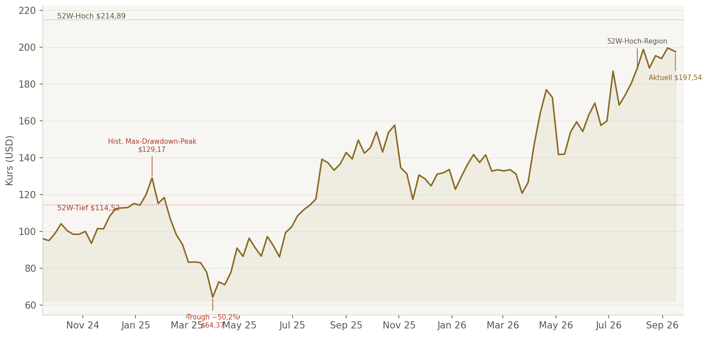
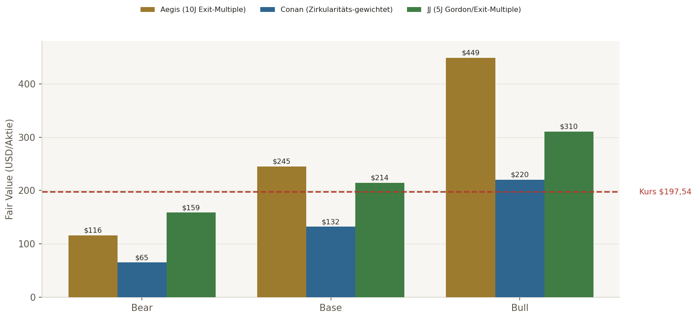

Was neu ist. Dieser Report wendet die seit gestern erweiterte Methodik an: Zirkularitäts-Sperre bei der Terminal-Value-Wahl, 2D-Sensitivitätsmatrix, Moat-Komponenten-Zerlegung innerhalb der KSF-Scorecard, eine verkettete These-Monitoring-Kette statt vier Einzellisten, historischer Max-Drawdown-Pflicht, Kunden-Capex-Verknüpfung, EV/FCF als Standardkennzahl, und eine Dissensus-Map, die zeigt, WORAN genau der KI-Dissens hängt.
Das operative Geschäft bleibt makellos. ROIC ~50%, FCF-Marge (SBC-bereinigt) ~44-54% je Berechnung, Net-Debt/EBITDA negativ (Netto-Cash $13,3 Mrd.), Bruttomarge ~63%, Op.-Margin GAAP ~43-45%. Praktisch schuldenfrei, Rekord-Kapitalrenditen.
Der Bewertungsbefund hat sich verschärft, nicht entschärft. Diesmal lieferten JJ und Conan beide vollständig eigenständige, konkrete DCF-Zahlen (nicht nur Methodik-Beschreibungen) — und liegen weiter auseinander als beim ersten Durchgang: JJ Base $214 (über dem aktuellen Kurs), Conan Base $130 (deutlich darunter), Aegis' eigener 10-Jahres-Exit-Multiple-Ansatz $245. Die Bandbreite ist real, nicht ein Rechenfehler.
Neuer, wichtiger historischer Fund. Der eigene, primärquellen-berechnete Max-Drawdown liegt NICHT bei der oft zitierten Covid-Korrektur, sondern bei einem jüngeren, deutlich größeren Einbruch: -50,2% zwischen Januar und März 2025 — relevanter für die Risikoeinschätzung als ältere Zahlen.
| Teildimension | JJ | Conan | Aegis |
|---|---|---|---|
| Business-Qualität | 🟢 | 🟢 | 🟢 |
| Moat/Wettbewerbsposition | 🟢 (Trend: stärker) | 🟡 (Trend: AI-Back-end schwächer) | 🟡 |
| Leitrisiko NVIDIA | 🟡 gemanagt | 🟠 wesentlich | 🟡 |
| Bewertung (Base-FV vs. Kurs $197,54) | 🟢 $214 (über Kurs) | 🔴 $130 (unter Kurs) | 🟢 $245 (über Kurs) |
| Wachstumsverlässlichkeit | 🟢 | 🟡 | 🟢 |
BEOBACHTEN
10J-Exit-Multiple Base $245 · zwischen JJ und Konsens
Implizit konstruktiv
Base $214 über Kurs · Moat-Trend "stärker"
NEUTRAL/WATCHLIST
Score 74/100 · Base $130 unter Kurs
| Kriterium | JJ | Conan | Status |
|---|---|---|---|
| ROIC | 49,9% | >200% (verzerrt, Cash-lastig) | ✅ konvergent (elite) |
| FCF-Marge (SBC-ber.) | ~53,7% | ~44,1% | ✅ konvergent (elite, Methodendifferenz) |
| Piotroski F-Score | 4/9 | ~6/9 | 🟡 Divergenz, beide "branchentypisch unkritisch" |
| EPS-CAGR (5J) | 39,9% | ~40% | ✅ konvergent |
| Bruttomarge | 63,0% | ~63,0% | ✅ konvergent |
| Op. Margin (GAAP) | 49,9% (Non-GAAP) | ~43,1% (GAAP) | ✅ konvergent (Basis-Differenz erklärt) |
| Revenue-CAGR (5J) | 26,9% | ~32% | ✅ konvergent (elite) |
| Net-Debt/EBITDA | 0,00 (netto cash) | -2,9x (netto cash) | ✅ konvergent |
| Capex/Umsatz | 1,44% | ~1,4% | ✅ konvergent (sehr kapitalleicht) |
| SBC/Umsatz (3J-Trend) | steigend absolut | ~5,1%→4,9%→4,8% (leicht fallend) | ✅ konvergent (unkritisch) |
| Key Success Factor | Status |
|---|---|
| High-Speed-Ethernet-Roadmap (800G/1.6T) | ✅ DEFENSIV |
| Software-/OS-Konsistenz & Automatisierung (EOS) | ✅ DEFENSIV |
| Hyperscaler-Design-Wins & Co-Development | 🟡 defensiv, aber konzentriert |
| Supply-Chain-Ausführung/Time-to-Deploy | 🟡 IN ARBEIT |
| Wettbewerbsposition/Moat gegen NVIDIA — siehe Komponenten unten | 🟡 IN ARBEIT |
| Diversifikation jenseits Microsoft/Meta | 🟡 IN ARBEIT |
| Komponente | Stärke | Trend |
|---|---|---|
| Software/EOS-Ökosystem | Sehr stark | Stärker |
| Hardware-AI-Back-end | Stark, umkämpft | Schwächer (Conan) / Stärker (JJ) — Dissens |
| Switching-Costs/Kundenbindung | Mittel-stark | Stabil-steigend |
| Skalen-/Ökosystemvorteile (Hyperscaler-Co-Dev) | Mittel | Ambivalent (Kundenmacht) |
| Offene Standards vs. NVIDIA-vertikale Integration | Mittel | Strukturelle Schlacht, offen |
| Cash + Marketable Securities | $13,34 Mrd. |
| Explizite Finanzschulden | Nahe null |
| Current Ratio | ~3,0x |
| Share-Count-Trend (Dez.24→Dez.25→Jul.26) | 1,2613 Mrd. → 1,2565 Mrd. → 1,2612 Mrd. (netto leicht rückläufig, H1 2026 keine Buybacks) |
| Buyback-Autorisierung offen (30.06.2026) | $817,9 Mio. |
Management-Score: Conan 5,5/7, JJ 6/7 — konvergent stark. Management-Tonalität (beide unabhängig): Arista positioniert sich NICHT als NVIDIA-Konkurrent bei GPUs, sondern als Netzwerk-Partner für heterogene/offene AI-Fabrics. Explizite Segmentierung von Management selbst: bei vollständig vertikal integrierten NVIDIA-Stacks (Scale-up/NVLink-nah) "sehr geringe Beteiligung" für Arista — bei Scale-out/Scale-across bessere Position. Bewertung: ehrlich statt euphorisch, bestätigt aber genau das strukturelle Risiko.
Top-2-Konzentration 2025: ~42% (Kunde A 26%, Kunde B 16% laut 10-K — Microsoft/Meta gemäß Vorjahresangaben). Microsoft: FY27-Capex-Wachstum YoY bestätigt, CY2026-Capex-Erwartung ~$190 Mrd. (davon ~$25 Mrd. reine Preiseffekte). Meta: 2026-Capex-Guidance $130-145 Mrd., explizit für AI-/Core-Infrastruktur, Q2 2026 Capex $31,08 Mrd. Einordnung: beide Großkunden bestätigen strukturell hohe, wachsende Capex — der Engpass ist nicht das Capex-Budget, sondern die INTERNE ALLOKATION (offene Ethernet-Fabrics vs. vertikale NVIDIA-Bundles). Status: 🟠 wesentliches, aber datenbelegtes Struktur-Risiko, kein akutes Ausschlusskriterium.

Eigene Berechnung (Aegis, Twelve-Data-Wochenschlusskurse seit 2016, [LIVE]-Primärquelle): größter historischer Drawdown -50,2%, Peak $129,17 (20.01.2025) → Trough $64,37 (31.03.2025) — deutlich jünger und größer als die oft zitierte Covid-Korrektur (~-50% März 2020) oder der Inflations-Schock 2022 (-36,7%). Auslöser: Wachstums-/Bewertungssorgen Anfang 2025, nicht durch die aktuelle NVIDIA-Frage getrieben. These danach intakt? Ja — der Kurs erholte sich bis September 2026 auf $197,54, deutlich über dem Vor-Drawdown-Niveau. Lehre: selbst bei intakter fundamentaler These sind bei ANET 50%-Drawdowns historisch real und aktuell — "günstig ggü. Historie" ist keine Garantie gegen einen ähnlichen erneuten Rückgang, insbesondere bei der aktuellen KGV ~61x-Bewertung.
| Quelle | Bear | Base | Bull | Methode |
|---|---|---|---|---|
| Aegis | $116 | $245 | $449 | 10J explizit, Exit-Multiple (18-34x) |
| JJ | $158,55 | $214,28 | $310,48 | 5J explizit, Gordon≈Exit-Multiple (konvergent) |
| Conan | $65 | $130-135 | $220 | Gordon 65%/Exit-Multiple 35% gewichtet, Zirkularitäts-Sperre angewendet |
Conan (einzige KI mit >30%-TV-Divergenz): Exit-Multiple lag ~30%+ über Gordon-Growth. Begründung für die gewählte 65/35-Gewichtung zugunsten Gordon war explizit NICHT "näher am Kurs", sondern: (1) unklare Terminal-Wettbewerbsposition gegen NVIDIA-Bundles in Jahr 10+, (2) bereits beobachtete Margin-Kompression durch Large-Customer-Discounts, (3) Wachstumsnormalisierungs-Risiko. Regelkonform.
JJ: Gordon-Growth ($214,28) und Exit-Multiple ($209,79) lagen <3% auseinander — die Zirkularitäts-Sperre greift laut Regel 38b erst >30% Abweichung, hier also gar nicht nötig. Kein Regelverstoß, aber JJs kürzerer 5-Jahres-Horizont bleibt eine Abweichung vom Haus-Standard (10J für Wachstumscompounder).
| Known | Unknown (recherchierbar) | Unknowable |
|---|---|---|
| Umsatz/Margen/Cash/Kundenkonzentration ~42%, aktuelle NVIDIA-Marktanteilszahlen | Exakter 2026/27-Wallet-Share bei Microsoft/Meta, tatsächliche Spectrum-X-Verdrängung je Cluster | Ob offene Ethernet-Fabrics über 10J gegen vertikale GPU-Stacks dominieren, langfristige AI-Nachfrage 2030+ |

| 5J-Umsatz-CAGR \ Exit-Multiple | 19,6x | 23,1x | 26,6x |
|---|---|---|---|
| 12% | $129 | $147 | $165 |
| 17% | $157 | $179 | $201 |
| 22% | $190 | $216 | $244 |
| Unternehmen | Fwd. KGV | EV/EBITDA | EV/FCF | Op.-Margin |
|---|---|---|---|---|
| Arista (ANET) | ~50er | ~45-46x | ~44-46x | ~43% |
| Cisco (CSCO) | 21,4x | 24,2x | 35,4x | 25,4% |
| Broadcom (AVGO) | 19,6x | 31,7x | 42,0x | 48,8% |
| NVIDIA (NVDA) | ~23,6x | ~22,1x | ~47,0x | ~60% |
| HPE | 12,2x | 12,8x | 21,2x | niedrig-mittel |
| Kennzahl | 🟡 Beobachten | 🟠 Neu bewerten | 🔴 These gefährdet |
|---|---|---|---|
| Bruttomarge (GAAP) | <62% (2Q) | <60% | <58% + Pricing-Druck |
| NVIDIA-Marktanteil (Ethernet-Switching) | weitere Anteilsgewinne, ANET wächst noch | NVIDIA gewinnt bei bestehenden ANET-Kunden | ANET verliert mehrere AI-Fabric-Design-Wins |
| Kundenkonzentration Top-2 | bleibt >40%, Wachstum hoch | ein Top-Kunde reduziert deutlich | Top-Kunde fällt unter Run-Rate (Architekturwechsel) |
| Working-Capital/Deferred Revenue | wächst schneller als Umsatz | FCF-Marge <30% (Timing) | materielle Write-downs/Retouren |
| Termin | Positivsignal | Warnsignal |
|---|---|---|
| ⭐ Q3 2026 Earnings (~Nov. 2026) — LEITKATALYSATOR | Umsatz ≥$3,3 Mrd., GM stabil >62%, starker FY27-Kommentar | schwacher Q4-Ausblick, GM-Druck, vage NVIDIA-Aussagen |
| Microsoft/Meta nächste Earnings | Capex bleibt netzwerkinfrastrukturlastig | Capex verschiebt sich zu GPU-only/vertikalen Bundles |
| 1,6T-Produkt-Updates 2027 | mehrere Hyperscaler-Deployments | Ramp verzögert, NVIDIA dominiert neue Cluster |
| Kernannahme | Confidence + Beleg | Beobachtbarer KPI | Eigener Kipppunkt |
|---|---|---|---|
| Arista bleibt führender offener Ethernet-Fabric-Anbieter für Hyperscaler/AI | Mittel-hoch — EOS/Roadmap/Wachstum stützen, NVIDIA greift strukturell an | AI-/Cloud-Titan-Revenue, 1,6T-Deployments, Data-Center-Switching-Share | Anheben: AI-Fabric-Wins außerhalb MSFT/Meta · Senken: NVIDIA gewinnt bestehende ANET-Designs |
| AI-Capex bei Microsoft/Meta bleibt hoch genug für ANET-Wachstum 2026/27 | Hoch kurzfristig — beide Kunden kommunizieren massiv steigenden Capex | MSFT/META-Capex-Guidance, Network-Infrastructure-Kommentare | Anheben: FY27-Capex weiter netzwerkbetont · Senken: Capex-Repriorisierung weg von Ethernet |
| Margen bleiben strukturell außergewöhnlich trotz Large-Customer-Discounts | Mittel — Op.-Margin stark, aber GM fiel bereits wegen Kundenmix | GAAP-GM, Non-GAAP-Op.-Margin, Produktmix | 🟡 <62% GM (2Q) · 🟠 <60% · 🔴 <58%+Pricing-Druck |
| Kundenkonzentration bleibt kontrollierbar | Mittel — Top-2 ~42% ist hoch, aber Kunden-Capex stark | Top-1/Top-2-Anteil, Customer-Sector-Revenue | Anheben: Top-2 <35% bei >20% Wachstum · Senken: ein Top-Kunde reduziert/verschiebt Architektur |
| FCF-Qualität bleibt hoch, nicht primär Deferred-Revenue-Timing-getrieben | Mittel — FCF stark, aber Deferred Revenue/Acceptance-Terms steigen | CFO-NI-Abgleich, Deferred Revenue, Inventory | Anheben: FCF-Marge >35% ohne überproportionale Deferred-Revenue-Zunahme · Senken: FCF <30% oder Write-downs |
| Bewertung bleibt durch Wachstum rechtfertigbar | Niedrig-mittel — aktueller Kurs verlangt Bull-nahe Ausführung | 5J-Wachstumspfad, EV/FCF, Forward-EPS-Revisionen | Anheben: 5J-Wachstum >20% sichtbar · Senken: Wachstum <15% bei EV/FCF >35x |
NVIDIA ist laut IDC in Q1 2026 im Datacenter-Ethernet-Switching auf Platz 1 vorgestoßen (Marktsurge +39,8% auf $15,4 Mrd.) — ein struktureller, mehrjähriger Risikofaktor, unabhängig vom aktuellen Newsflow. NVIDIA bündelt GPU+NIC+Switch+Software zu einem vertikal integrierten AI-Fabric-Stack; Arista bleibt bei offenen, heterogenen Ethernet-Fabrics stark, ist aber in den wertvollsten neuen AI-Back-end-Designs stärker gefordert. Kein Existenzrisiko, aber ein reales Multiple-/Wachstumspfad-Risiko bei der aktuellen Bewertung.
Überwiegend Verkäufe in den letzten 90 Tagen (u.a. CEO Ullal, Co-Founder Bechtolsheim, Kenneth Duda), fast ausnahmslos als 10b5-1-Planverkäufe gekennzeichnet — kein diskretionäres Panikverkaufsmuster, aber auch kein bullisches Signal. Keine Open-Market-Käufe in den letzten 12 Monaten dokumentiert. Bei der aktuell hohen Bewertung ist das fehlende Insider-Buying ein relevanter, wenn auch nicht alarmierender Datenpunkt.
Alle Kernkennzahlen [LIVE]/[VERIFIED] über SEC-10-Q/10-K-Primärquellen (Conan) bzw. Aggregator-Quellen mit Websuche (JJ), gegenseitig plausibilisiert. Piotroski-F-Score zeigt eine Divergenz (JJ 4/9 vs. Conan ~6/9) — beide werten dies als branchentypisch unkritisch für einen Netto-Cash-Compounder, nicht als Datenfehler. Historischer Max-Drawdown wurde von Aegis direkt aus Twelve-Data-Primärreihen nachgerechnet (nicht aus einer Sekundärquelle übernommen) und weicht dadurch von einer zunächst zitierten älteren Zahl ab — die selbst berechnete, aktuellere Zahl (-50,2%, Jan-Mär 2025) gilt als verbindlich.
| Anker-Bereich | 6-8 Qualitäts-Kern (nahe Ausnahme-Compounder-Schwelle) |
| Ausgangswert | 8 von 6-8 — DNA/Bilanz/Moat-Substanz elite |
| Aktive Mali | Bewertungsdeckel (KGV ~50-61x), Kundenkonzentration ~42%, NVIDIA-Leitrisiko — als korrelierte Gruppe behandelt (alle senken Sicherheitsmarge) |
| Aktive Deckel | Konfidenz max. 🟡 (echte 3-Wege-DCF-Divergenz $65-310) |
| Finaler Score | 7-8/10, Konfidenz 🟡 MITTEL |
Ein fundamental makelloser Compounder, dessen Bewertung diesmal noch schärfer geprüft wurde — und dessen faire-Wert-Spanne sich dabei NICHT verengt, sondern verbreitert hat ($65-449 über drei unabhängige Ansätze). Das ist kein Rechenfehler, sondern der ehrliche Ausdruck echter, primärquellenbelegter Unsicherheit über die NVIDIA-Wettbewerbsfrage und die richtige DCF-Methodik für einen 10-Jahres-Wachstumscompounder. Champions-Fit ja, sofortige hohe Konviktion nein.